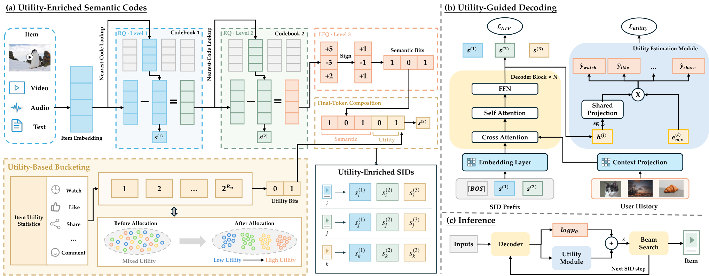
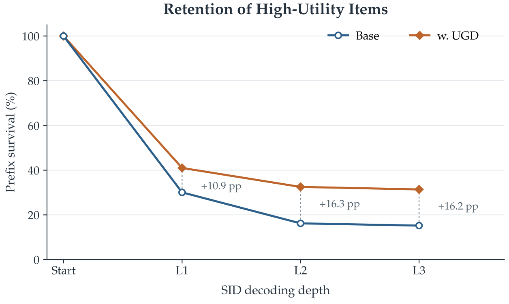

做生成式推荐的团队值得读。UAGR（快手这篇论文提出的方法）在两个以前只看内容和概率的地方加入了视频的价值：SID 最后一个 token 里留出 3 个比特存价值档位；束搜索每一步把预测出的价值分加进剪枝分数。这样改有两个原因。常见的生成式推荐只按内容给视频编 SID，常被看完的视频和很少有人看完的视频，只要内容相近，就拿到几乎一样的编码。束搜索又只按生成概率剪枝，价值高的候选可能在中间某个 token 就被剪掉，后面的重排救不回来。价值分来自模型解码时对观看时长、长播放、点赞、转发的预测，按权重加起来；SID 长度和词表大小都不变。
它已在快手短视频推荐全量上线，一周 A/B 里视频观看时长提升 0.206%。离线在 KuaiRand 上，只加解码这一项，Recall@3 就从 2.111% 提到 2.578%，高于生成后重排的 2.307%，也高于用同样价值分做 GRPO 训练的 2.418%。这意味着，价值信号放在剪枝这一步用，比只在生成完之后重排更有效。
它到底在解决什么问题？
生成式推荐把每个视频编成一个 SID，比如由 3 个 token 组成，每个 token 从 8192 个编号里选一个。模型看着用户历史，一个 token 一个 token 地生成 SID，生成出的 SID 对应的视频就是推荐结果。生成用束搜索，束宽记为 K。
问题出在两处。第一，SID 是按视频内容的 embedding 聚类得到的，内容相近的视频编码也相近，甚至完全相同。两个都讲「家常红烧肉」的视频，一个完播率很高，一个大多数人划走，编码上分不出来。第二，生成概率学的是「用户历史里出现过什么」，不直接反映曝光之后用户会不会看完、点赞、转发。束搜索在中间某一步按概率剪掉一个前缀，这个前缀下面的所有视频就都没机会了。
论文图 2 用一个四条前缀的例子说明第二个问题（数字是论文图中的示意值），束宽 K 取 2：
| 前缀 | 累计生成概率（对数） | 价值分 | 只按概率 | 概率加价值 |
|---|---|---|---|---|
| A | -1.0 | 0.6 | -1.0，保留 | -0.4，保留 |
| B | -1.2 | 0.1 | -1.2，保留 | -1.1，剪掉 |
| C | -1.5 | 0.2 | -1.5，剪掉 | -1.3，剪掉 |
| D（用户会喜欢的视频在这里） | -1.4 | 0.7 | -1.4，剪掉 | -0.7，保留 |
只按概率时 D 排第三，被剪掉，它下面那个用户会喜欢的视频再也生成不出来。把价值分加上以后，D 的总分从 -1.4 变成 -0.7，排到第二，留了下来。事后重排做不到这一点，因为重排只能在已经生成出来的候选里调顺序。

UAGR 怎么做：先看全景

整个方法分两块，各管一件事：
| 部件 | 什么时候起作用 | 做什么 |
|---|---|---|
| UGD | 训练时加一个小预测模块；推理时每一步剪枝都用 | 预测每个候选 token 对应的曝光后行为，加权成价值分，和生成概率一起排序 |
| UE-SID | 建 SID 时 | 在最后一个 token 里留 3 个比特存价值档位，让内容相近、价值不同的视频编码不同 |
两块的分工是：编码让价值不同的视频在 SID 上可以分开，解码让价值在剪枝时真正起作用。下面拆开讲。
解码时怎么算价值分？
这一块论文叫 UGD（Utility-Guided Decoding 的缩写）。为什么需要它：束搜索每一步都要决定留谁，而概率只代表相关性。要在剪枝时考虑价值，就得在每一步、对每个候选 token 都有一个价值估计。
价值预测模块直接复用生成模型的计算。解码第 个 token 时，解码器已经根据用户历史和已生成的前缀算出一个隐状态。模块先用一个小 MLP 把这个隐状态压成一个低维向量，四种行为共用这个向量。然后每种行为对每个候选 token 各有一个可学的向量和偏置（每个 token 位置各一套），和这个低维向量做内积，得到「接上这个 token 后，这种行为的预测分」。四种行为是观看时长、长播放、点赞、转发。
剪枝时每个候选的总分是：
第一项是到目前为止的累计生成对数概率。 是第 种行为在候选 token 上的预测分。 把各种行为的预测放到同一量级：点赞这类二分类预测过 sigmoid；观看时长这类回归预测，先在当前这一步的所有候选里做标准化，再过 sigmoid。 是各行为的权重，论文用观看时长 0.6、长播放 0.2、点赞 0.1、转发 0.1， 取 1。
有一个细节容易忽略：概率是逐个 token 累加的，价值分却不累加。排序分等于累计对数概率，加上当前这一步候选 token 的价值分；前面几步的价值分不带进来。 Hoot 说

- 价值分（示意）：0.6 × 0.9 + 0.2 × 0.5 + 0.1 × 0.2 + 0.1 × 0 = 0.66
- 排序分（示意）：累计对数概率 −1.4 加上 1 × 0.66，等于 −0.74；只用这个分决定留不留
- 进入下一步的仍是 −1.4 加上下一个 token 的对数概率，这一步的 0.66 不带过去，所以长前缀不会把价值分重复加好几遍。
示意：一条前缀在某一步的一个候选 token。左列是这一步算出的两样东西，右列是剪枝和下一步。四种行为的归一化预测是编的，权重 0.6、0.2、0.1、0.1 和 λ 取 1 是论文的设置。 出处: 论文 §3.2 排序分公式（累计对数概率 + λ·加权归一化预测，价值分只用当前一步）、价值头读取 stop-gradient 后的解码器隐状态；附录 B.2 权重和 λ
推理时模块只看隐状态，不看任何真实反馈。真实反馈只在训练时出现：每条训练样本是用户历史加一个目标视频，目标视频曝光后有没有长播放、看了多久、点没点赞、转没转发，这些记录作为标签，监督模块在目标 SID 每个 token 上的预测。离线实验里，这些标签取自训练期的全部曝光记录，包括没有长播放的曝光，不用验证集和测试集的数据。总的训练目标是原来的下一个 token 预测损失，加上一个权重 0.001 的价值损失。
这个模块读入解码器隐状态的地方加了 stop-gradient。生成模型仍然用下一个 token 预测损失照常训练（论文里是 LoRA 微调），只是不受这些带噪声的行为标签干扰。以后要加一种新行为，也只需要加一个预测头。推理时这些预测头和下一个 token 的预测用同一次前向计算，不需要额外跑一遍模型。
编码时怎么把价值放进 SID？
为什么需要这一步：如果两个视频的 SID 完全一样，解码时就无法区分它们，价值分再准也没用。论文把这种情况叫 SID 冲突。在 KuaiRand 上用常规的三层残差 K-means 编码，有 4.29% 的视频和别的视频共用同一个 SID。
论文的编码方案叫 UE-SID（Utility-Enriched SID 的缩写），它只改最后一个 token，前两个 token 照旧用残差 K-means。最后一个 token 的 8192 个编号正好是 13 个比特。做法分三步：
- 把最后一个 token 拆成 13 个独立的 0/1 比特。 用一个可学的线性投影把前两层剩下的残差变成 13 个数，每个数大于 0 记 1，否则记 0。这种做法叫 LFQ（lookup-free quantization，不查码本、直接按正负号取比特）。投影的训练目标有两项。一项让这 13 个数各自靠近它取到的 +1 或 −1，这样取比特时丢的信息少。另一项是熵正则，让各种编号都被用到，避免大量视频挤在少数编号上。论文没有加重建损失，比特里的内容信息来自输入本身：它就是前两层没分完的内容残差。
- 挑出 3 个最没用的比特让出来。 13 个比特里选 3 个，一共 286 种组合，作者全部试一遍，选去掉后冲突增加最少的那 3 个。
- 让出的 3 个比特存价值档位。 3 个比特正好能表示 8 个档，所以用 7 个从小到大的边界值把价值统计量切成 8 档，编号 0 到 7。统计量越过了几个边界，就落在几号档，档位编号写进这 3 个比特。离线实验里，价值统计量用的是视频的历史点击率。
举个例子（示意）：两个红烧肉视频的 10 个内容比特完全一样，都是 1011001110；一个点击率落在 6 号档，写成 110，一个落在 1 号档，写成 001。拼起来是两个不同的编号，模型能分开生成它们。编号总数还是 8192，词表没变。
实验：价值真的帮到推荐了吗？
离线实验用 KuaiRand-27K，这是快手公开的短视频数据，带多种曝光后反馈。每个用户只保留长播放的视频作为正样本序列，最后一个用于测试。生成模型是 OneRec-1.7B，用 LoRA 微调，束宽 200。下表各行都在同一个基础模型上比较。
| 方法（KuaiRand） | Recall@3 | NDCG@3 | Recall@5 | NDCG@5 |
|---|---|---|---|---|
| 基础模型 | 2.111 | 1.643 | 3.149 | 2.046 |
| 加生成后重排 | 2.307 | 1.675 | 3.275 | 2.083 |
| 加 GRPO 训练 | 2.418 | 1.953 | 3.602 | 2.450 |
| 只加 UE-SID | 2.409 | 1.967 | 3.585 | 2.436 |
| 只加 UGD | 2.578 | 2.047 | 3.712 | 2.499 |
| 完整 UAGR | 2.774 | 2.274 | 3.963 | 2.776 |
（单位 %，来自论文表 3）
先看解码这一项该和谁比。重排和 GRPO 用的是同一个价值分、同样的四项权重，只是用的位置不同：重排在生成完以后调顺序，GRPO 在训练时把价值分当奖励。只加 UGD 的 Recall@3 比重排高 0.27 个点，比 GRPO 高 0.16 个点。这说明同样的价值信号，放在剪枝时用比放在事后或训练时用更有效。GRPO 优化的是完整 SID 的奖励，它会改变生成概率，所以也间接影响剪枝，但不能保证高价值前缀在中间剪枝时留下来；UGD 直接改了每一步的剪枝分数。
和其他类型的方法比，完整 UAGR 在论文表 1 的所有方法里最好，Recall@3 比最强的基线高 7.74%。单独的部件则大致和已有的强基线相当：只加 UGD 的 2.578 与 RecForest 的 2.575 几乎一样。所以单个部件的提升不宜高估，两块合起来才拉开差距。
再看编码。单独加 UE-SID，Recall@3 从 2.111 提到 2.409。附录的拆解说明了各步的作用：只换成 13 比特的 LFQ，视频之间更好区分，推荐效果也变好；去掉 3 个最弱的比特，推荐效果反而略好；再加上 3 个价值比特，各项推荐指标都明显提升。作者还试了直接学一个 10 比特的 LFQ 再加 3 个价值比特，编码容量完全一样，Recall@3 却只有 2.168。作者的解释是，一开始只学 10 个比特压得太狠，丢掉了对推荐有用的内容区分；先学 13 个再去掉最弱的 3 个，能保留更多。这只是一个数据集上的一组对比。
最直接的证据是论文图 3。作者把有长播放反馈的视频算作高价值视频，以解码开始前这批视频为分母，统计每解码一个 token 后，它们的前缀还剩多少在束里。这是评测时的统计：长播放标签只用来挑出这批视频，解码时模型用的只是自己的预测。同样束宽下，加了 UGD 以后，第一个 token 后多保留 10.9 个百分点，第二个 token 后差距最大，为 16.3 个百分点，第三个 token 后保持在 16.2 个百分点（数字读自图中标注）。价值分从第一次剪枝起就有作用，到中间的 token 差距最大。

线上在快手短视频推荐场景替换原来的生成模型，做了一周 A/B：App 使用时长提升 0.074%，视频观看时长提升 0.206%，视频播放量提升 0.164%，三项都通过了 p<0.05 的显著性检验；QPS 只降 0.03%。这说明每步多算几个预测头的开销在线上几乎可以忽略。UAGR 从 2026 年 9 月起已在快手全量。
我认为它的局限
第一，离线指标的绝对值很低，基数也小。Recall@3 只有 2% 左右，完整 UAGR 比基础模型高 0.66 个点。数据集只有一个 KuaiRand-27K，没有在其他数据或其他基础模型上复现。
第二，线上只报了整体效果。0.206% 的观看时长提升是 UGD 和 UE-SID 一起上的结果，没有分开的线上实验，看不出线上收益主要来自哪一块。
第三，价值分的四项权重和 都是手工定的一组值：观看时长 0.6、长播放 0.2、点赞 0.1、转发 0.1， 取 1。实验只报告了这一组设置下的结果。换一个业务目标，权重要重新调，而这组值对结果有多敏感，现在的实验看不出来。
一个推荐团队可以怎么试
- 先只加解码时的价值分。论文是让行为预测头和生成模型一起训练，靠 stop-gradient 隔开；想更省事，可以先冻结现有生成模型，只在它的隐状态上训练几个预测头，这是我的简化。剪枝时把加权价值分加到累计概率上。对照组用同样价值分做生成后重排，看提升是不是来自剪枝这一步。
- 同时统计高价值目标的前缀保留率，像论文图 3 那样逐个 token 看。如果各个 token 上的保留率都没有明显提高，说明价值分没起作用，调法见第 4 步。
- 再看现有 SID 的冲突比例。如果超过几个百分点，再试把最后一个 token 换成按比特编码、让出几个比特存价值档位。
- 把四项权重和 当作要调的超参数：先在离线数据上扫几组，再挑一两组上线做 A/B，因为论文只给了一组设置。
结论
生成式推荐的价值信号，最该用在束搜索剪枝的那一刻；编码层面再给价值留几个比特，让内容相近的视频能被分开。
| 维度 | 评价 |
|---|---|
| 问题重要性 | 高。中间前缀被剪掉的候选，事后重排救不回来，序列级奖励也只能间接影响 |
| 方法创新性 | 中。每步加价值分和在编码里留比特都不复杂，但两者配合、价值分只算当前一步的设计很清楚 |
| 实验证据 | 中。有和重排、GRPO 的同条件对比和逐个 token 的保留率分析，但离线只有一个数据集，线上没拆开各部件 |
| 工程成本 | 低到中。加几个轻量预测头，推理不多跑前向；编码要重建最后一个 token |
| 是否值得尝试 | 值得。已经上线生成式召回、又有多种曝光后反馈的团队，可以先试解码时加价值分 |
读完这篇，你觉得
夜读鸮记下了，谢谢你的反馈。
点一下即可，无需登录；再点一次撤回。只统计匿名次数，不记录你是谁。
讨论
欢迎补充实验细节、复现经验或不同看法。需 GitHub 登录。
正在加载讨论…